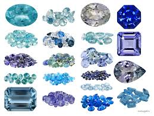

Почти все об янтарях

А сейчас пришло время поговорить о загадочном, завораживающем янтаре. Этот камень цвета меда, кажется несет с собой тепло солнечных лучей, которые ощутимы при прикосновении к янтарю, недаром его называют теплым камнем.
Смолой веков, солнечным камнем, сгустком застывшего солнца, слезами дочерей Солнца, слезами, которым дарована завидная доля утешать и радовать людей, называют янтарь. Да, в нем нет блеска бриллиантов, загадочности изумруда, но люди издревле ценили его за естественность и простоту.
У янтаря много названий. Персы называли его кахраба — похититель соломы, немцы бернштайн — горючий камень, русские — морской ладан, греки — электрон, литовцы — гинтарас.
Все эти названия оправданы и объясняются удивительными свойствами камня. Если потереть его о шерсть и поднести к соломе или бумаге, то он их притянет. Янтарь хорошо горит, издавая смолистый запах хвои. Он почти не поддается воздействию внешних факторов, поэтому миллионы лет не оставляют на нем почти никаких следов. Янтарь не растворяется в воде.
Янтарь — это смесь органических соединений. Его удельный вес не одинаков. Белый непрозрачный янтарь хорошо держится на поверхности воды и легко выносится на берег.
Куски янтаря отличаются друг от друга не только по форме, но и по цвету, твердости, прозрачности. Цвет янтаря — желтый с разными оттенками, от светло-желтого до красного. Бывает и белый янтарь, похожий на слоновую кость.
Этот камень любили и почитали с древнейших времен. В погребениях каменного века находили бусы, пуговицы и многие другие изделия из янтаря.
Янтарь — один из первых драгоценных камней, известных человечеству. Символ Солнца янтарь украшал корону знаменитого египетского фараона Тутанхамона. Маленькая фигурка из янтаря стоила в те времена дороже сильного, хорошего раба.
Археологические исследования подтвердили, что с началом меновой торговли в Европе янтарь распространился очень широко. Особенно ценился балтийский. Поэтому не удивительно, что он с древних времен манил к берегам Балтики купцов Финикии, Греции, Рима. Очарованные красотой янтаря, они привозили его на родину. С тех пор янтарь стал известен южным народам. Привозили его в необработанном виде, а потом делали браслеты, ожерелья, пуговицы, трубки, мундштуки.
При французском дворе модницы носили кулоны из янтаря с «мушками», причем позволить себе такую игрушку могла далеко не каждая из них…
Считается, что перебирание в руках янтарных бус укрепляет душевные и физические силы. Это камень здоровья, счастья и любви. Могучий талисман и амулет, он помогает владельцу уходить от проблем, избегать ссор и неприятных ситуаций. Этот камень поддерживает оптимизм, дарит утешение в разных жизненных ситуациях и обостряет интуицию.
ПроисхождениеВ течение многих веков люди пытались разгадать тайну происхождения янтаря. Еще ученые античных времен заметили, что он обладает свойствами, присущими обычной древесной смоле.
Первые, довольно наивные представления относительно происхождения янтаря появились в работах античных авторов. Эсхил и Софокл считали, что янтарь — слезы. Сравнение этого камня со слезами не случайно, некоторые янтарные образования действительно имели форму капель-слез.
Древнегреческий философ-материалист Демокрит считал, что янтарь — это окаменелая моча диких животных, в частности рыси. Образно толковал возникновение янтаря Ниней: он заключил, что это концентрат солнечных лучей, выброшенный волнами на берег.
Сам же Плиний Старший, как и Аристотель, отмечал растительное происхождение этого камня. Он пришел к выводу, что янтарь образовался из жидкой живицы хвойных деревьев, со временем затвердел от холода. К такому выводу Плиний пришел после того, как заметил, что если потереть кусочек янтаря, то он начинает пахнуть смолой хвойных деревьев, а в пламени начинает коптить.
Близко к разгадке происхождения янтаря подошел древнеримский историк Тацит. В своих работах он писал о происхождении янтаря следующее: «Сам же янтарь — не что иное, как сок растений, так как в нем иногда встречаются зверьки и насекомые, заключенные в некогда еще жидкий сок. Вероятно, эти страны были густо покрыты лесами, которые выделяли из себя бальзам и амбру. Лучи низкого солнца изгоняли этот сок, и жидкость капала в море, откуда она бурями выносилась на противоположный берег».
Было также предположение, что янтарь является специфическим выделением китов, которое напоминает амбру.
Очень многие древние ученые пытались объяснить возникновение янтаря. Предполагалось, что это морская пена, застывшая под действием солнечного света, окаменевшая на дне моря нефть, затвердевший жир таинственных животных. В наше время исследователи-минералоги с полной уверенностью могут сказать, что янтарь действительно является окаменевшей смолой хвойных лесов неолита.
Янтарь образовался 60–70 миллионов лет назад из смолы хвойных деревьев. С увеличением влажности почвы и потеплением климата деревья выделяли большое количество смолы. Она отвердевала и с остатками древесины попадала в почву. Спустя много миллионов лет эта смола под влиянием разнообразных физических и химических факторов среды видоизменилась и превратилась в янтарь.
Основные запасы его скопились под Калининградом в слоях голубой земли. Вероятно, ученые никогда не смогли бы подробно рассказать о происхождении янтаря, если бы он сам не хранил в себе частицу своей истории.
МесторожденияЯнтарь встречается не только на побережье Балтийского моря, но и в Харьковской, Киевской областях, в Польше, на севере и западе Германии, Дании, на юге Швеции. В Африке, Новой Зеландии известна разновидность ископаемых смол — копал. Это смола четвертичного периода, через миллионы лет она «дозреет», а пока ей надо еще полежать в земле, прежде чем стать настоящим янтарем.
У нас на Таймыре обнаружен янтарь, залегающий в меловых отложениях, более древних, чем голубая земля.
Вообще же можно сказать, что месторождения изучены еще недостаточно и оставляют массу загадок. Происхождение многих из них до сих пор не ясно. Однако все они условно подразделяются на первичные и вторичные, так называемые янтарные россыпи.
Первичные месторождения янтаря связаны с угольными месторождениями, они произошли на местах произрастания древних деревьев. В таких залежах янтарь распределен неравномерно, крупные куски отсутствуют и особого промышленного значения не имеют.
К первичным месторождениям относят Фушунское в Китае, Краеугольноспасское и Угловское на Дальнем Востоке, месторождения на Аляске, в Хатангской впадине, на Урале, в Австрии и Канаде.
Вторичные месторождения, к которым относятся янтарные россыпи, скопления янтаря, несколько удалены от мест их первичного залегания. Янтарь, имеющий плотность чуть более единицы, хорошо держится на воде, что в общем-то и сыграло роль в его перемещении на расстояние. Вода размывала месторождение и уносила с собой часть янтаря.
Вторичные месторождения янтаря встречаются в России, Прибалтике, в Германии, Польше, на Аляске и Украине.
Добыча янтаряСамый древний способ добычи янтаря — сбор кусочков, выброшенных морем на прибрежный песок. Были времена, когда для добычи янтаря приспособили сачок. Рыбаки во время шторма черпали этим сачком гонимый волнами янтарь.
Особенно много янтаря добывалось во время янтарных бурь. Недалеко от поселка Пальмникена в 1862 году в результате бури на берег прибоем было выброшено около двух тонн янтаря, а в 1878 году на берегу оказалось такое количество янтаря, какое жители прибрежных поселков собирали несколько лет. В 1914 году к северо-востоку от Пальмникена было выброшено на берег 0,8 тонны янтаря. После произведенных расчетов исследователи сделали вывод о том, что ежегодно море преподносило людям подарки в виде 36–38 тонн янтаря. Всего на побережье Балтийского моря до сегодняшнего времени было собрано около 150 тысяч тонн солнечного камня.
Жители Балтийского побережья занимались сбором янтаря вплоть до того времени, пока Тевтонский орден не объявил монопольное право собственности на камень. Были учреждены специальные карательные органы, которые тщательно следили за тем, чтобы никто не смел собирать янтарь ни на берегу, ни в море. За неповиновение грозила смерть.
С начала XVII века и особенно в XIX веке янтарь из моря добывали ныряльщики. Однако этот способ не обеспечивал достаточного количества камня. Позже в море за янтарем стали выходить на лодках. Один из пловцов длинным шестом начинал рыхлить дно, а остальные вылавливали сачками янтарь, поднимавшийся при этом на поверхность воды.
После создания водолазного костюма люди попытались добывать янтарь новым способом, однако походы водолазов часто заканчивались трагически и были малопроизводительными.
Впервые на суше стали добывать янтарь лишь в конце XVII века. Для этого на берегу в местах, где встречалось большое количество янтарной крошки, выкапывали глубокие ямы. Копали обычно до тех пор, пока не начинал всплывать янтарь, который тут же вылавливали сачками.
В XVII веке были предприняты первые попытки разработки пластов с включениями янтаря. В прибрежных обрывах устраивались штольни, которые однако были засыпаны впоследствии песками, перекрывшими доступ к янтароносным пластам. Такой способ добычи янтаря тоже оказался нерентабельным.
С начала XIX века янтарь стали добывать с помощью открытых горных выработок. Пласты с янтарными включениями разрабатывали в течение года путем закладки небольших карьеров. Таким образом янтарь добывался в течение почти 50 лет.
В XIX веке с изобретением землечерпательных машин добыча янтаря значительно увеличилась. Со дна вычерпывали песок, содержащий янтарь, и доставляли его на побережье, где камень отделяли от песка. Таким образом производилась добыча 75 тонн янтаря в год.
В семидесятые годы вновь стали добывать подземным способом. Началось строительство первых надшахтных сооружений, фабрик по переработке янтаря. Подземная разработка продолжалась вплоть до 1922 года.
Перед Второй мировой войной янтарь добывали карьерным способом. С помощью мощных экскаваторов снимались верхние слои породы глубиной до 30 метров. Порода, содержавшая янтарь, загружалась на платформы железнодорожного состава и доставлялась на обогатительную фабрику.
В результате оккупации Прибалтики немецкой армией во время Второй мировой войны Прибалтики были полностью уничтожены предприятия по добыче янтаря. Лишь в 1947 году были начаты работы по восстановлению силового хозяйства, разработке карьеров, обеспечению водными коммуникациями.
Сегодня к добыче янтаря привлечена самая современная техника: шагающие экскаваторы, мощные гидромониторы, способные переработать 40-метровый слой, который покрывает «голубую землю», содержащую солнечный камень.
Самым производительным способом добычи янтаря в настоящее время является способ добычи из открытого карьера. Таким способом добывается камень в поселке Янтарном, где находится самое крупное месторождение.
Семь миллионов кубометров грунта пришлось убрать людям для того, чтобы добраться до огромнейших уникальных залежей. На это месторождение приходится более 90 % всей мировой добычи янтаря.
В поселке находится знаменитый Янтарный комбинат, изделия которого славятся во всем мире.
Янтароносную землю подают на промывку, потом на обогатительную фабрику. Там солнечный камень сортируют, прессуют, перегоняют в химические продукты. Много янтаря идет на экспорт.
Янтарь используется как изоляционный материал в электротехнике и радиотехнике, для выпуска специальных масел, кислот, лаков. Янтарная кислота используется в сельском хозяйстве и фармакологии. Но самое широкое применение солнечный камень находит в ювелирной промышленности.
Виды янтаря и его имитацияИзвестно несколько видов янтаря, свойства которых практически одинаковы. Наиболее известным является прибалтийский, так называемый сукцинит. Расцветка его варьируется от молочно-белого, медово-желтого до красновато-коричневого. Встречается прозрачный янтарь, замутненный содержащимися в нем пузырьками воздуха или растительными включениями, и совсем непрозрачный. Сукцинит, как следует из его названия, содержит много янтарной кислоты, больше чем все остальные виды янтаря. Из-за содержащейся в сукцините янтарной кислоты при нагревании он издает характерный запах.
Симетит — сицилийский янтарь и румынит — румынский янтарь редко бывают желтого цвета, они чаще всего черного, красно-коричневого, бурого цвета пережженного сахара. При этом румынский янтарь обладает множеством трещин, однако несмотря на это прекрасно полируется.
Бирмит — бирманский янтарь — обычно коричневого цвета. Часто имеет красивые прожилки кальцита и большое количество насекомых.
Самым твердым из всех видов янтаря является бирмит. Твердость основных видов янтаря варьируется в пределах от 2,5 до 3 по шкале Мооса. Удельный вес янтарей равен 1,04-1,10. Он уменьшается с увеличением количества присутствующих в нем включений в виде воздушных пузырьков и растительных фрагментов.
Янтарь как аморфное вещество имеет лишь один показатель преломления, который равен в среднем 1,54. Янтарь размягчается при температуре 180 °C, при температуре 300 °C плавится и начинает гореть, издавая специфический запах.
Янтарь очень легко электризуется при трении о шерстяную ткань или мех, в результате чего приобретает способность притягивать к себе легкие предметы вроде соломы, кусочков бумаги, ниток. Однако эту его способность нельзя считать основным признаком, потому как многие виды синтетической имитации янтаря обладают способностью электризоваться. Но в случае, если образец не электризуется при трении, то с полной определенностью можно говорить о том, что он не относится к янтарю. Примером такого случая является имитация янтаря из казеиновых пластмасс.
Одной из наиболее известных имитаций янтаря является прессованный янтарь, так называемый амброид. Впервые амброид был произведен в 1881 году из крошки прибалтийского янтаря. Янтарная крошка расплавляется при температуре 200–250 °C и в расплавленном состоянии спрессовывается в однородную сплошную массу. Амброид выглядит как настоящий природный янтарь и обладает присущими ему свойствами. Опытный человек может определить подлинность янтаря невооруженным глазом.
В прессованном камне можно заметить линии слияния прозрачного янтаря с замутненным. Для спрессованного камня характерно также наличие большого количества вытянутых в одном направлении пузырьков воздуха. Настоящий янтарь содержит пузырьки воздуха ровной сферической формы.
Помимо описанных видов существуют также более молодые по времени своего образования камни. К ним относятся копал и каури. Они часто встречаются в Новой Зеландии. Такой янтарь можно считать молодым, недозревшим, недостаточно «выдержанным». Определить копал можно несколькими способами. Копал легко плавится и быстрее растворяется в эфире. Место, на которое падает капля эфира, становится липким на ощупь и после испарения вещества мутнеет. Такая реакция не наблюдается в случае с натуральным и прессованным янтарем.
Еще одним характерным для копала свойством является склонность к образованию трещин. Копал также настолько мягок, что эту его особенность можно заметить при простом нажатии на него твердым предметом.
Наличие в образце насекомых или фрагментов растений не является абсолютным подтверждением того, что перед нами настоящий «взрослый» янтарь. Кроме того, все чаще встречаются синтетические имитации янтаря с насекомыми. Однако замурованные в них «мученики» слишком аккуратно располагаются, чтобы можно было принять их за подлинных. Насекомые, заливаемые в прозрачные пластмассы, уже мертвы — и в позах, в которых они увековечиваются, не видно признаков борьбы за свою жизнь, все слишком красиво.
Янтарь имитируют также различными синтетическими смолами. Надо отметить, что почти все имитации имеют значительно больший удельный вес по сравнению с настоящим янтарем. Поэтому выявить подлинность можно еще одним довольно простым способом при помощи обычной поваренной соли. В стакане воды растворяются десять чайных ложек поваренной соли. В таком растворе все образцы природного и прессованного янтаря будут плавать, а все пластмассовые имитации будут погружаться на дно.
Проверить подлинность янтарного образца можно с помощью острого перочинного ножа, но для этого придется слегка повредить образец. Дело в том, что при попытке сделать срез с образца натуральный янтарь и копал будут крошиться, в то время как с синтетического образца будет сходить стружка.
Подлинность янтаря проверяется также пламенем. Стружку или крошку образца необходимо подержать в пламени спиртовки, при этом натуральный янтарь и копал будут гореть с выделением ароматического дыма, целлулоид сгорит мгновенно, бакелит лишь обуглится.
Стеклянные имитации янтаря выглядят очень внушительно. Однако тепло камня невозможно спутать с мертвой холодностью стекла. Стеклу также свойственны высокая плотность и твердость, которые не дадут вам ошибиться при выявлении подлинности янтаря.
Включения в янтареУдивление и восторг вызывают закованные внутри солнечных камешков древние насекомые и растения. Такие включения называются инклюзами и являются подтверждением растительного происхождения камня.
В янтаре учеными было обнаружено и описано более 900 видов насекомых и мелких животных. Инклюзы имеют большое значение для изучения эволюции природы. Они являются прямым источником познания жизни, существовавшей на земле много миллионов лет назад. По мельчайшим фрагментам растений и животных, законсервированных в янтаре, была восстановлена картина «янтарного леса».
В янтаре встречаются самые разнообразные включения: иглы хвойных деревьев, обрывки листьев, лепестки цветов, веточки деревьев. Особенно чудесными кажутся сохранившиеся в янтарных каплях насекомые. Однажды проявленное любопытство стоило насекомым жизни, не так просто вырваться из плена вязкой древесной смолы.
Песчинки и кусочки земли заносились в смолу ветром или лапками мелких животных. Навечно сокрытыми под слоем солнечной смолы были также семена растений, клочки шерсти древних животных, перья птиц, кусочки коры деревьев. Очень редкими являются включения с каплями воды и пузырьками воздуха.
Янтарь с включениями всегда очень высоко ценился. В начале нашей эры финикийские купцы за янтарь с замурованным в нем муравьишкой или мотыльком давали 120 мечей и 60 кинжалов.
Существуют коллекции янтаря с включениями. Самым богатым собранием обладал перед Второй мировой войной музей Кенигсбергского университета. Коллекция содержала более 65 тысяч экспонатов. Самым уникальным среди них была ящерица с оторванным хвостом, скопления муравьев, стрекозы с распростертыми крыльями, едва умещавшимися в куске янтаря, рои ос и пчел, паучки на паутине. К сожалению, коллекцию постигла та же участь, что и знаменитую «Янтарную комнату».
Лягушка, увековеченная в янтаре, долгое время экспонировалась в кабинете естественной истории Виленского университета.
Сегодня увидеть янтарные чудеса можно в музее янтаря в городе Паланга. Посетители увидят пауков с вытянутыми ногами, вероятно пытавшихся вырваться из вязкого плена, мух, застигнутых в полете, термитов и толстых тараканов, муравьев, несущих соломинки.
Необычайную сохранность включений янтаря можно объяснить незначительной вязкостью смолы хвойных деревьев. Привлеченное соком дерева насекомое садилось на кап и уже не могло вырваться из плена; смола, вытекавшая из древесины, заливала пленника слой за слоем, что обеспечивало в дальнейшем хорошую сохранность мельчайших, измеряемых микронами органов членистоногих. Природа готовила невероятные подарки для наших исследователей-энтомологов.
Обработка янтаряСамые ранние предметы из янтаря, обнаруженные археологами-исследователями, были изготовлены более 9 тысячелетий назад. В основном это были мелкие предметы быта и украшения: бусы, амулеты, курительные трубки, фигурки, изображающие людей и животных.
Широкое распространение предметы из янтаря получили примерно, три тысячи лет до нашей эры. В этот период обработка янтаря достигла уже достаточно высокого уровня. Найденные изделия из янтаря уже украшались довольно сложной резьбой. Все они отражали стороны жизни и мировоззрение первобытного человека.
Около 1500 предметов быта, выполненных из янтаря, было обнаружено археологами на Лубанской равнине. Основную массу составляли бусы, подвески, кольца, бусины, гребни. Исследователей поразило разнообразие форм найденных подвесок: они были выполнены в виде капель, вытянутых трапеций, округлые, прямоугольные, обладающие волнистыми и зубчатыми краями. Особое восхищение вызвали подвески в виде птиц, зверюшек, змей.
Ожерелья и бусы собирались из бусин самой разнообразной формы: круглых, четырехгранных, миндалевидных, фасолееобразных и т. д.
Изделия из янтаря, относящиеся к началу бронзового века, встречаются во многих странах мира; это является свидетельством того, что уже к тому времени было хорошо налажено серийное производство и торговля янтарными «чудесами» между восточными и северными соседями.
Европа познакомилась с янтарем уже в I веке до н. э. Теплый солнечный камень не только легко обрабатывался, но и поражал воображение разнообразием медовых оттенков. Янтарем торговали от Балтийского до Северного моря.
Большая часть добываемого янтаря уходила на выполнение четок и других предметов религиозного культа, которые пользовались спросом в странах Востока.
Янтарь использовался также для создания оптических стекол. Самыми лучшими и дорогими в средние века считались очки с янтарными стеклами. Янтарные линзы использовали при производстве микроскопов, увеличительных стекол, луп.
Возникает вопрос, каким образом неоднородный мутный янтарь мог использоваться для выполнения оптических стекол. Уже в то время люди хорошо исследовали свойства янтаря, а именно его способность проясняться при разогревании в масле. В результате прогревания получался идеально чистый, прозрачный как стекло материал, пригодный для вытачивания линз.
В XIII веке Тевтонский орден объявил монопольное право на добычу, обработку и торговлю янтарем как на побережье, так и в самом Балтийском море. Неповиновение каралось смертью. Этот факт значительно затормозил развитие янтарного ремесла. Но янтарь все равно продолжал поступать в другие страны по веками проложенным торговым путям.
В XVII, начале XVIII века из янтаря стали выполнять преимущественно декоративные художественные изделия. В это время янтарь стали применять для украшения внутреннего убранства дворцов и замков. Из солнечного камня вырезали кубки, вазы, шкатулки, трубки, табакерки, светильники, скульптуры, создавали картины в технике мозаики, рамы для них. Именно в это время появилась мебель, инкрустированная янтарем, были созданы скульптуры мадонн, данцигские кораблики, рамы под зеркала. Известно, что Людовику ХIV принадлежала большая янтарная ваза, выполненная в виде гондолы. Янтарь по своей ценности приравнивался в это время к слоновой кости.
В ХIХ веке с изобретением землечерпательных машин добыча янтаря значительно увеличилась. Это повлекло за собой снижение его себестоимости. Из янтаря стали производить товары широкого потребления: пуговицы, гребни, курительные трубки, набалдашники для трости, ручки для зонтов и ножей, шкатулки и т. д. Изделия из янтаря становились все доступнее. Мастера предпочитали использовать в работе чистый, однородно окрашенный янтарь, поэтому удаляли все включения и придавали изделиям правильные геометрические формы. Янтарные произведения утрачивали свою естественность и неповторимость.
В середине ХХ века традиции обработки янтаря стали развиваться особенно быстро. В Европе стали появляться профессиональные школы, специализирующиеся на выполнении изделий из янтаря.
Крупнейшее предприятие по переработке янтаря находится в Калининградской области в России. А также янтарь традиционно перерабатывался в Литве и Латвии.
Прежде чем превратиться в прекрасное солнечное ожерелье или медово-желтый браслет, янтарю необходимо пройти целый ряд подготовительных процедур.
Прежде всего янтарь промывается и сортируется. Необработанный, он выглядит совсем не так привлекательно, как мы привыкли его видеть, куски янтаря покрыты сверху коричневой окисленной коркой. Для того чтобы раскрыть сокровища, таящиеся под ней, в заготовительном цехе обрабатывающего предприятия раскройщицы специальным ножом с искривленным лезвием срезают корку и придают кусочку лучшую форму, стараясь сохранить его неповторимость.
Затем янтарь отправляется в камнерезный цех, где на больших шлифовальных станках кускам придается форма и где куски полируются фетровыми дисками. Только после этого янтарь приобретает наконец свой неповторимый вид и может служить материалом для создания художественных и ювелирных изделий.
Большую часть производимых изделий из янтаря составляют бусы и ожерелья. Конфигурация бусин, подготавливаемых для их выполнения, самая разнообразная: круглые, овальные, прямоугольные плоские, граненые. Огранка янтарных бусин производится на специальных шлифовальных станках, количество граней варьируется от 3 до 64. Модели бус различаются цветом, размером и порядком расположения бусин на нитке.
Большой популярностью пользуются также декоративные бусы, выполненные из естественно несимметричных, слегка отшлифованных кусочков янтаря.
При всем многообразии современных возможностей обработки мастера считают важным не изменить янтарь, придав ему четкую правильную форму, а бережно сохранить его цвет и структуру, подчеркнуть его живую природную красоту. Важно не испортить естественное очарование янтаря, не нарушить игру красок, не погасить медовые искорки, скрывающиеся внутри. Опытные мастера достигают невероятных результатов при работе с янтарем, лишь умело подмечая шлифовкой и оправой очарование солнечного камня.
Основной продукцией художников Калининградского обрабатывающего комбината являются ювелирные изделия — такие, как броши, запонки, зажимы для галстуов, браслеты, ожерелья, перстни и т. д. Янтарь обладает удивительной способностью сочетаться почти со всеми декоративными материалами: черным деревом, слоновой костью, эмалью, серебром, золотом, медью и даже драгоценными камнями. В работах прибалтийских мастеров янтарь играет ведущую роль, а остальные материалы лишь дополняют его, выполняя второстепенную роль.
Именно в работе с металлом проявляется мастерство художника. Янтарь одевают в ажурную филигранную оправу, кольчужное плетение, оксидированное серебро, выпиловку, гнутье, чеканку, гравировку, чернение, окаливание, блестящую полировку, эмалирование. Богато смотрится янтарь, декорированный зернью, которая придает выразительность и изысканность изделию.
Очень долгое время мастера спорили о том, сочетается ли янтарь с драгоценными металлами, в частности с золотом. Высказывались мнения о том, что золото своим величием затмевает янтарь, в некоторых работах камень действительно теряется, но в данном случае можно лишь посетовать на неопытность мастера, выполнившего изделие.
Изящная ажурная оправа, выполненная в филигранной технике, выгодно подчеркивает первозданную красоту янтаря. Тонкое искусство филиграни пришло в Россию из стран Востока и на нашей почве приобрело совсем новый оттенок.
Лучше всего с золотом сочетаются прозрачные янтари с красноватым оттенком, содержащие радужные блестки. Натуральные янтари такой расцветки встречаются в природе очень редко, но их в достатке получают в лабораторных условиях. Сделать янтарь прозрачным и получить искристые блестки можно в результате каления. При этом янтарь покрывается красной корочкой, а внутри него возникают искрящиеся веерообразные трещинки, напоминающие по форме рыбью чешую. Осветленный таким образом янтарь приобретает красивый вишневый оттенок.
Красивые изделия получаются с янтарем, имеющим инклюзии фрагментов растений или пузырьков воздуха.
Янтарь, отличающийся небольшой твердостью и разнообразием форм, нуждается в особом виде крепления в ювелирном изделии. Чаще всего для фиксации янтаря в оправе применяется свободная подвеска на «шиповых закрепах». При таком способе крепления шип-проволочка с загнутым кончиком вклеивается в высверленное в янтаре отверстие. Это крепление выгодно подчеркивает красоту и выразительность камня.
Последнее время полированные цветные янтари неопределенных форм получают при помощи обкатки в специальных барабанах-окатышах. Из получаемых таким способом бусин создают бусы и ожерелья.
Легенды и мифыКонечно же, такой красивый камень, как янтарь, не могли обойти мифы и сказания.
Седые волны Балтики выносят на берег кусочки желтой смолы — то матовой, то прозрачной. Этот путь янтаря из морских глубин на берег породил фантастическую легенду, рассказывающую о его происхождении.
На дне Балтийского моря в янтарном замке жила прекрасная богиня Юрате. Молодой отважный рыбак Каститис осмелился ловить рыбу в ее владениях. Богиня послала своих русалок предупредить Каститиса, чтобы он не мутил воды Балтийского моря. Но не испугался юноша ее предупреждений и продолжал забрасывать сети в море.
Юрате полюбила Каститиса за смелость и красоту и увлекла его в свой янтарный замок. Но верховного бога Перкунаса разгневала любовь бессмертной богини и человека. Бог разрушил замок, приковал Юрате к развалинам, а Каститиса убил. С тех пор горько оплакивает Юрате своего возлюбленного. Ее рыдания трогают даже вечно холодные глубины Балтийского моря, которое, волнуясь, выбрасывает на берег осколки янтарного замка.
Лечебные свойства янтаряЯнтарь издревле применялся не только как украшение, но и как целебное средство. Информацию о янтаре как средстве лечения мы встречаем в трактатах древних ученых, к примеру Плиний Старший в своей «Естественной истории» упоминает об использовании янтаря в медицине.
Лекарством от многих болезней назвал Авиценна янтарь в «Каноне врачебной науки», ставшей фундаментальной энциклопедией медицинских знаний средневекового Востока.
В 1551 году А. Аурифабер в своей работе, посвященной янтарю, привел 46 рецептов применения янтаря в медицине. Он считал, что самыми ценными целебными свойствами обладает белый янтарь, он же — по его мнению — и самый чистый. Научные исследования опровергли это предположение древнего врача. Белый янтарь (или, как его еще называют, «костяной янтарь») содержит иногда большое количество активных химических элементов.
Янтарь считался даже волшебным камнем, ему поклонялись, из него делали амулеты-обереги и талисманы, приносящие счастье. Янтарю приписывали способность предохранять владельца от злых духов и болезней.
Этот красивый, приятный на ощупь камень считался камнем-охранителем, защищающим от дурного сглаза и наговора. Янтарь считался камнем-утешителем в бедах и невзгодах. Считалось, что нет такой болезни, от которой янтарь не мог бы помочь.
Женщины украшали себя янтарем. Они верили, что он не только выгодно оттеняет красоту смуглой кожи, но и делает ее матовой, чистой, здоровой.
В переводе с литовского «гинтарас» — защита от болезней. Известен исторический факт, когда литовский герцог Альбрехт свое пожелание скорейшего выздоровления Лютеру сопроводил крупными кусками янтаря.
Европейцы изготовляли из янтаря футляры для курительных трубок, мундштуки, портсигары. Изделия из солнечного камня были красивы и достаточно дороги, они долго пользовались спросом, это объяснялось приписываемым янтарю обеззараживающим свойством.
В наше время серьезные научные исследования подтвердили то, что наши предки чувствовали интуитивно. Народный способ лечения янтарем теперь имеет под собой довольно прочную научную основу. Исследования показали, что янтарь богат солями янтарной кислоты, которая является неспецифическим биостимулятором.
Диапазон действия янтарной кислоты довольно широк. Янтарь стимулирует нервную систему, деятельность почек и кишечника, применяется как антистрессовое, противовоспалительное, антитоксичное средство.
При использовании препаратов, содержащих янтарную кислоту, нормализуется кислотно-щелочная картина крови и наблюдается восстановление сил даже у людей преклонного возраста. Значительное содержание янтарной кислоты выявлено в винограде, крыжовнике, репе, ревене.
Из янтаря получают янтарную кислоту. Она довольно широко используется в промышленности и сельском хозяйстве. Техническая янтарная кислота употребляется для изготовления реактивной янтарной кислоты, янтарного ангидрида, янтарнокислых солей натрия и аммония, ряда эфиров янтарной кислоты, многих красителей, зубной пасты, мыла.
В последнее время открылась новая область применения янтарной кислоты в медицине — в качестве биогенного стимулятора. Ее действие сводится к активированию всех ферментов организма. Поэтому можно смело говорить о том, что янтарная кислота — важный фактор регуляции физиологического состояния организма.
Уже в 30-х годах прошлого века янтарная кислота применялась в медицине как биологический стимулятор, способствующий лучшему приживанию консервируемой на холоде ткани. Л.Н. Кондрашова в работе «Регуляция янтарной кислотой энергетического обеспечения и функционального состояния ткани», завершенной в 1971 году, делает вывод о том, что янтарную кислоту можно с успехом использовать в лечебных и профилактических целях.
Лечебное действие янтарной кислоты на организм основано на усилении восстановительных процессов. Поэтому особенно важно применение препаратов янтарной кислоты при патологиях сердца, почек, возрастных нарушениях регуляторных нервных центров, при интенсивной мышечной деятельности и при воздействии на организм токсических веществ, в частности антибиотиков.
Лучше всего себя зарекомендовали препараты янтарной кислоты при патологиях сердца.
Янтарная кислота подобна топливу, сгорающему в клетках. Здоровые клетки в ней не нуждаются, и в них она просто не поступает. В свою очередь кислота безошибочно находит больную клетку, моментально в нее проникает и поддерживает функционирование соответствующего органа.
Янтарная кислота не только регулирует процессы, но и реставрирует утраченные ранее функции тканей, она возобновляет в отмирающих и вялых тканях жизненные процессы. Препараты янтарной кислоты наиболее целесообразно применять при умеренном ослаблении организма. Это поможет предотвратить тяжелые последствия. Возможно сочетание янтарной кислоты с другими лекарственными средствами.
Янтарная кислота нетоксична и не накапливается в тканях организма. Она обеспечивает естественную нормализацию животного и растительного организмов. Применяется при лечении анемий, ее натриевую соль вводят внутривенно с целью выведения из коматозного состояния и пробуждения от наркоза.
История Янтарной комнатыСвоим появлением на свет шедевр прикладного искусства Янтарная комната обязан Фридриху I Гогенцоллерну. Таким образом он хотел увековечить знаменательное событие — свое восхождение на прусский престол.
В Кенигсберг был приглашен датчанин Готфрид Вольфрам. Датский художник и архитектор был лучшим знатоком янтаря и мастером по его обработке. Он получил заказ выполнить янтарную галерею для замка Шарлоттенбург, который находится в окрестностях Берлина. В 1707 году была закончена первая стена галереи.
Однако вскоре услуги датского мастера показались архитектору замка Шарлоттенбург Эосандру фон Гете слишком дорогими, и он отказался от его услуг.
Работа по выполнению янтарной галереи была передана двум мастерам-янтарщикам из города Гданьска — Готфриду Турову и Эрнсту Шахту. Покрыть стены целой галереи янтарными плитами оказалось слишком дорогим удовольствием, и поэтому было принято решение о сокращении объема работ: было решено отделать не всю галерею, а только лишь один кабинет. Но несмотря на это, площадь янтарных плит, которыми должны были быть покрыты стены дворцового кабинета, составляла около 70 м2.
В 1716 году царь Петр I посетил короля Фридриха-Вильгельма в его резиденции в Берлине. Там Петр увидел янтарный кабинет, который ему очень понравился. Царь высказал пожелание иметь в Петербурге у себя во дворце такую же комнату.
Прусский король мечтал о могущественном союзнике в лице крепнущего Российского государства и потому решил преподнести янтарный кабинет российскому царю в подарок.
Перед отправкой в Петербург стены янтарного кабинета были разобраны на отдельные панели и вывезены через Прибалтику.
Через сорок лет императрица Елизавета приказала перенести Янтарную комнату в резиденцию в Царском Селе, где комната впоследствии многократно подвергалась изменениям, дополнялась, переделывалась. В результате чего площадь янтарных панелей, покрывавших стены кабинета, увеличилась почти в четыре раза. Детали янтарной комнаты отразили на себе смену одного художественного стиля другим. Янтарная комната представляла собой смесь стилей барокко и рококо.
Широкую известность принесли Янтарной комнате не только ее историческая и художественная ценность, но более всего возникшие после ее исчезновения во время Второй мировой войны гипотезы и легенды о ее исчезновении и месте нахождения.
Кто же помог исчезнуть Янтарной комнате? Когда немецко-фашистские войска подходили к Ленинграду, в верховное командование немецкой армии к Эриху Коху, гаулейтеру Восточной Пруссии, поступило сообщение от доктора Альфреда Роде, в котором тот повествовал о находившемся в Ленинградской области памятнике искусства. Альфред Роде был директором Прусского музея города Кенигсберга и прекрасно знал место нахождения редкого произведения искусства.
Предметами искусства, вывозимыми с оккупированных территорий, занимался аппарат Розенберга, который возглавлял особый отдел «по делам охраны произведений культуры и искусства». В ведении Розенберга был батальон СС, состоящий из искусствоведов и историков, одетых в форму. Возглавлял этот батальон офицер фон Кюнсберг, профессиональный искусствовед. Идея Альфреда Роде о вывозе Янтарной комнаты из России в Восточную Пруссию была воспринята Кохом с энтузиазмом. Им обоим хотелось заполучить редкий памятник искусства в свое владение.
Затерять памятник искусства в лабиринтах партийной и государственной власти в суетное военное время оказалось не таким уж простым делом. Эрих Кох разработал целую кампанию по вывозу памятника искусства из города Пушкина.
На Западе была организована пресс-конференция, на которой прозвучало заявление о том, что знаменитому памятнику искусства на территории боевых действий грозит гибель. Газеты пестрели заголовками статей, призывающих немецкий народ к спасению исторического памятника, созданного по приказу прусского короля. Предполагалось, что шедевр будет возвращен на историческую родину в Пруссию и помещен в музей искусств.
После проведенной подготовительной кампании в прессе в дело включились люди Коха, который до этого времени старался оставаться в тени. Кох имел влиятельных друзей в командовании немецкой армии. В частности, войсками, занимавшими Ленинградскую область, руководил фельдмаршал Кехлер, старый приятель Коха и бывший командующий вермахта в Восточной Пруссии. Договориться о взаимовыгодном сотрудничестве не составляло труда…
Вскоре из среды солдат и офицеров прусских дивизий прозвучали настойчивые просьбы о спасении исторического памятника, дорогого прусскому народу. «Удовлетворяя» пожелания народа, Кох и Роде спокойно принялись за дело.
Демонтаж Янтарной комнаты производился под наблюдением доктора Роде. Он был хорошим знатоком янтаря, автором многих научных работ, посвященных ему. Надо отдать должное, Роде педантично описал все фрагменты янтарного оборудования комнаты. Все было тщательно пронумеровано, уложено в ящики, погружено в колонну автомобилей и затянуто плотным брезентом.
Из записей доктора Роде, которые позднее исследовали ученые, стало ясно, что янтарная обшивка стен была размещена по двадцати двум ящикам размером четыре на два метра. После войны записи доктора Роде исследовались неоднократно. При сравнении довоенных данных с данными доктора было выявлено отсутствие пятидесяти квадратных метров янтарной обшивки, находившейся на фризах и плафонах. Этот факт — лишь один из списка тайн, относящихся к исчезновению Янтарной комнаты.
По прибытии в Пруссию в замке города Кенигсберг была устроена выставка, на которой был представлен шедевр янтарного зодчества.
По воспоминаниям Эриха Коха, которые он пересказал много лет позже в польской тюрьме, зрелище было сказочным и действительно поражало воображение простого человека. Красота была настолько нереальной, что с трудом верилось в то, что такое чудо могли сотворить руки земного человека. Стены демонстрационного зала были до потолка покрыты резным янтарем. Тысячами искр сверкали зеркала в хрустальных рамах, оправленных янтарем. В янтарные панели были вмонтированы полотна старых мастеров. Резьба по янтарю была настолько миниатюрна, что ее приходилось рассматривать при помощи увеличительного стекла.
Из документов достоверно известно, что осенью 1944 года Янтарная комната находилась в резиденции Коха, хотя Розенберг не оставлял попыток взять контроль за судьбой шедевра в свои руки. Известно также, что Розенберг обращался даже с этим вопросом к самому Гитлеру, но тот, учитывая «заслуги Коха перед Отечеством» распорядился оставить комнату в ведении гаулейтера Коха.
Когда начались бомбардировки, янтарный шедевр снова был разобран и упакован в ящики, как оказалось, уже навсегда. Больше свет не видел янтарной сказки прусского царя.
Ящики с янтарными плитами были спущены в подвалы замка. Однако линия фронта все приближалась к Кенигсбергу, советские войска наступали. Кох забил тревогу, он обратился с просьбой в Берлин об оказании помощи и просил прислать уполномоченного «для приема сосредоточенных в городе произведений искусства, документов и ценностей».
В качестве уполномоченного в Кенигсберг был послан оберштурмбаннфюрер СС Георг Рингель в сопровождении десяти эсэсовцев. Впоследствии оказалось, что имя уполномоченного было псевдонимом, что весьма затруднялись дальнейшие поиски пропавшего шедевра.
Из документов известно, что в числе ценностей, подлежавших эвакуации было также около 800 икон, похищенных в храмах Киева, Харькова, Ростова.
После взятия Кенигсберга в город приехала специальная комиссия из Москвы, занимавшаяся поисками произведений искусства и культуры, вывезенных за время оккупации с территории Советского Союза. Возглавлял эту комиссию искусствовед профессор Брюсов. Он хорошо знал доктора Роде по его научным работам и предложил ему сотрудничество по спасению исторических ценностей, оставшихся в развалинах Кенигсберга.
Доктор Альфред Роде передал советским властям небольшое количество ценностей, награбленных немецкими солдатами, и несколько экспонатов музея, сохранившихся после осады Кенигсберга в 1945 году. Но Раде ни слова не проронил о местонахождении — Янтарной комнаты — впрочем, его никто о ней не спрашивал, к тому времени советская власть еще просто не знала, что бесценный шедевр был вывезен из Пушкина именно в Кенигсберг. Роде упомянул лишь, что под развалинами города вроде бы находятся ценности мирового значения. Но у комиссии из Москвы и так было много дел, чтобы еще гоняться за призраками.
Альфред Роде и его жена исчезли совершенно таинственным образом. В квартире, где проживала чета Роде, были найдены два свидетельства о смерти, из которых становилось ясно, что оба супруга умерли от кровавой дизентерии с признаками тифа. Свидетельства были подписаны немецким врачом Паулем Эрманом. Однако впоследствии выяснилось, что ни на одном кладбище города Кенигсберга нет захоронений с телами четы Роде, а о докторе Пауле Эрмане вообще никто и никогда не слышал.
Одной из версий исчезновения Роде и его жены была причастность к делу «вервольфов», диверсантов немецкой разведки. Считается, что супруги были отравлены, тем более, что кенигсбергской разведывательной группой руководил тот самый загадочный оберштурмбаннфюрер Георг Рингель, занимавшийся эвакуацией ценностей. Вообще же псевдоним «Рингель» является производным от немецкого слова «Ring» — кольцо. Такие псевдонимы выбирали себе секретные агенты, занимавшиеся золотыми изделиями, драгоценными камнями и валютой.
Свидетелей исчезновения Янтарной комнаты осталось очень мало, война — суетное время, когда «затерять» человека не составляло особого труда, тем более когда этим занимаются спецслужбы.
Спустя много лет после окончания войны профессор Брюсов получил письмо от сына доктора Роде, в котором тот говорит: «…Я не могу себе представить, что мой отец мог допустить вывоз Янтарной комнаты из Кенигсберга. Мне кажется, что она находится в подвалах замка…».
Важным свидетелем являлся владелец ресторана, размещавшегося в подвале замка, — Пауль Фейербрандт. На следствии он заявил, что осенью 1944 года в подвалах замка были спрятаны ящики с янтарными панелями — и когда началась осада города, они еще оставались там.
О судьбе Янтарной комнаты мог знать также инспектор памятников и музеев города доктор Фрезе, но он покинул Кенигсберг перед самым его взятием и бесследно исчез.
До сих пор не ясно, почему доктор Роде остался в городе, почему он не покинул его вместе с войсками. Возможно, он выполнял какое-то задание или выяснял, что же известно советским властям о пропаже шедевра.
К сожалению, это вся информация, касающаяся исчезновения Янтарной комнаты, далее следуют домыслы, догадки, легенды, подозрения и надежда на то, что когда-нибудь мы сможем вновь увидеть янтарное чудо…